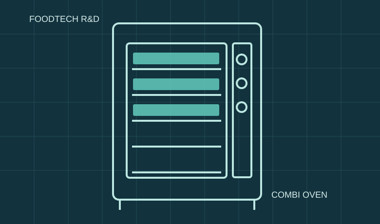

HOME / RESEARCH & DEVELOPMENT
RESEARCH & DEVELOPMENT
조리의 과학에서
기자재의 혁신까지
쌀가루 가정·외식용 조리법과 조리기자재 연구를 통해 식품의 물성과 열·수분 제어의 관계를 검토했습니다.
GOVERNMENT RESEARCH PROJECT쌀가루 가정·외식용
쌀가루 가정·외식용
조리법 및 조리기자재 개발
한빛산업이 주관연구기관으로 참여한 연구개발 자료입니다. 상명대학교와의 협동 연구 경험을 토대로 조리법과 기자재를 함께 고도화하는 접근을 소개합니다.
- 쌀가루 조리 및 식품 물성에 따른 기능 요구 분석
- 복합오븐의 온도·수분 제어와 시제품 설계
- 다양한 열원에서 활용하는 조리 소도구 개발 연구

연구개발 발표자료를 참고하여 제작한 개념 일러스트
RESEARCH FOCUS
연구에서 다룬 핵심 문제
2012년 2차년도 중간발표자료의 기술 설명을 토대로 재구성했습니다.
THERMAL CONTROL
온도와 수분을 균일하게
베이커리 제품에는 균일한 온도와 적정 수분, 정·역회전 기능의 중요성이 검토됐습니다.
STEAM PROCESS
증기 조리의 최적화
병과류 조리에서는 충분한 스팀 공급과 응축수 관리 등 기능 개선 방향을 검토했습니다.
DESIGN & PROTOTYPING
시제품 설계와 테스트
CAD/CAM 기반 설계, 목각 모형과 실험실·현장 알파테스트를 통한 개발 접근이 제시됐습니다.
RECIPE DEVELOPMENT
식품과 기구의 공동 개발
쌀식빵·머핀·스콘·쌀면·만두피 등 쌀가루 기반 조리법과 기자재 적합성을 함께 연구했습니다.
RESEARCH PROCESS
연구가 실제 기술이 되는 과정
01
요구 파악
조리법 및 사용 환경 분석
02
구조 설계
열원·스팀·기구 결합 검토
03
시제품 개발
제품 구조 및 사용성 시험
04
기능 평가
실험실·알파테스트
05
성과 정리
보고서와 조리북 제작
연구자료 근거
「쌀가루 가정·외식용 조리법 및 조리기자재 개발」 최종보고서 파일명 및 2012.11.23 2차년도 중간발표자료. 보고서 식별번호 11-1541000-001703-01. 관련 지식재산의 현재 권리상태나 상용화 결과는 별도 검증 전이므로 표시하지 않았습니다.